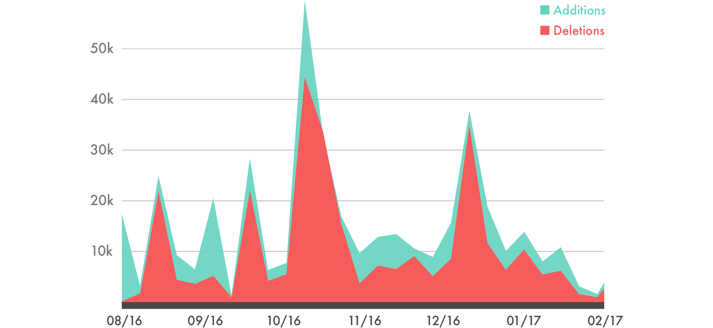
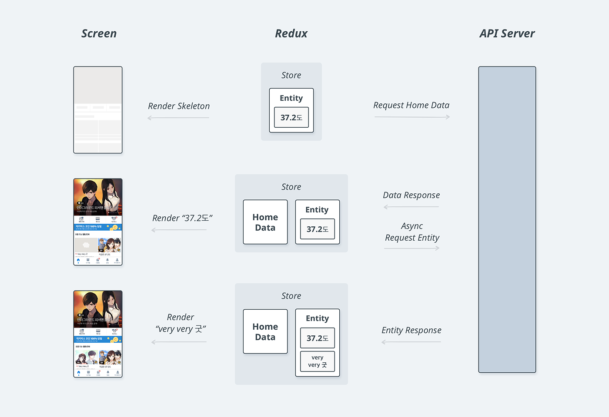

본 포스팅은 회사 블로그에 올려놓았던 글을 옮겨놓은 것입니다.
몬타나 존스 라는 만화영화가 있었습니다. 1990년대 중반쯤에 방영되었던 것으로 기억이 나네요. 에피소드마다 의인화된 사자와 호랑이가 유적지를 탐험하다 제로경으로 대표되는 악의 무리와 부딪힙니다. 제로경은 니트로 박사라는 부하가 만들어준 로봇을 타고 주인공의 앞길을 막고, 쫓고 쫓기는 아슬아슬한 활극 끝에 결국 정의의 편인 주인공이 승리하곤 합니다. 여기서 제로경과 니트로 박사가 주고받는 대화가 일품입니다.
제로경: 니트로 박사, 사정을 설명해보실까?
니트로 박사: 지금이라도 시간과 예산을 조금만 더 주신다면…
제로경: 변명은 죄악이란 걸 모르나!
오래된 기억 상자 속에서 몬타나 존스라는 만화영화 이야기를 꺼낸 이유는 신규 서비스를 개발하는 입장에서 니트로 박사에게 어쩐지 묘하게 공감했기 때문입니다. 스타트업에서 개발을 하는 많은 개발자분들도 공감할 수 있는 이야기라는 생각이 듭니다.
우리에게 시간이 좀 더 있다면! 예산이 더 있다면! 인력이 더 있다면!
가장 큰 문제는 시간
아, 시간! 콘텐츠 플랫폼의 비즈니스 가치는 유료 회원수와 콘텐츠의 질에 따라 결정됩니다. 그렇기 때문에 초기 시장을 선점하는 일은 굉장히 중요합니다. 이미 사용자는 기존 플랫폼이 제공하는 UX에 익숙해져 있습니다. 특별한 이유가 없다면 다른 제품을 사용하지 않습니다. 또한 콘텐츠 제공자는 시장에 영향력을 가진 플랫폼을 선호하기 때문에, 신생 플랫폼 입장에서 콘텐츠를 확보하려면 많은 노력이 필요합니다.
하지만 리디스토리 개발이 시작될 당시 이미 굳건한 위치를 잡고 있는 플랫폼들이 많이 있었습니다. 따라서 리디스토리는 골리앗에게 도전하는 다윗의 심정으로 조금이라도 더 누구보다 빠르게 남들과는 다르게 출시해야 했습니다.
이러한 사정은 비단 리디스토리 만의 이야기는 아닙니다. 많은 스타트업들이 빠르게 시장에 진입하기 위해 기반기술 같은 부분들은 가능하면 매니지드 서비스를 이용하고 생산성이 좋은 언어와 프레임워크를 이용하는 것이 요즘 트렌드인 것 같습니다.
웹앱, 그리고 더 빠르게
그래서 웹앱이었습니다. 서비스 론칭까지 4개월, 선택지는 그리 많지 않았습니다. 사실 개발 초기에는 서버 개발자 2명밖에 없었습니다. 팀 내에 네이티브 앱 개발 경험을 가진 개발자가 있더라도 빠른 서비스 론칭을 위해서는 결국 웹앱 쪽으로 방향을 잡을 수밖에 없었습니다. 동일한 서비스를 구현하는 코드를 Android, iOS 각각의 플랫폼별로 두 벌을 만들어 유지하고 각각의 코드에서 발생할 이슈들까지 잡아나가기엔 시간과 인력의 효율 면에서 좋지 못했습니다.
방향이 웹앱으로 정해지고 나서부터 리디스토리 개발팀은 익숙하고 빠르게 결과물을 낼 수 있는 방식으로 작업을 하기 시작했습니다. 서비스에 필요한 UI를 HTML로 구성하고 그 안에서 동적으로 변경되는 부분들은 Django에서 지원하는 Jinja2라는 템플릿을 통해서 구성하는 전통적인(?) 방식이었습니다. 그렇게 서비스의 얼개가 대강 잡혔을 때쯤 우리는 그동안 우리 안에서 가지고 있던 불안에 대해 꺼내놓고 이야기하기 시작했습니다.
이거 너무 느린데요?
네, 너무 느렸습니다. 느릴 수밖에 없었습니다. 스마트폰에 앱이라는 형태로 인스톨된 이상 사용자는 여타 다른 네이티브 애플리케이션과 비슷한 반응성을 기대하며 리디스토리 앱을 이용하게 됩니다. 하지만 리디스토리 앱의 내부는 웹과 동일한 형태로 구현이 되었으니 사용자 입장에서는 어딘가 모르게 굼뜨다는 인상을 받게 됩니다. 매 화면 이동마다 흰 화면이 순간적으로 노출되고 인터랙션도 어딘가 모르게 답답합니다.
개발팀은 하던 일을 모두 중지하고 회의실에 모여 머리를 맞대고 대책을 강구하기 시작했습니다. 길고 긴 회의 끝에 기존의 방법을 버리고 Single Page Application(이하 SPA)으로 전면 개편이라는 선택지로 겁도 없이 손을 뻗었습니다. SPA 개발을 도와줄 도구로서 React와 Angular를 비교했고, 학습곡선이 낮고 좀 더 자유로운 방식으로 사용 가능한 React에 React-router를 곁들여 사용하기로 했습니다. 그때부터 이른바 고난의 행군이 시작되었습니다.
개발팀 태스크보드에는 서비스 화면의 이름이 쓰인 태스크들이 무더기로 등장했습니다. 개발자들은 그 태스크들을 하나씩 가져와 기존에 Jinja2 템플릿으로 되어 있던 화면을 React 기반으로 옮기기 시작했습니다. 단순 포팅을 넘어서 화면의 각 구성요소를 적절하게 컴포넌트화하여 재사용성을 높이고, 각 화면들의 시나리오들을 React 라이프사이클에 적절하게 녹여내야 했습니다.

그냥 Redux 쓸 걸
우리가 겪은 기술적인 문제들은 대부분 웹이면서 웹이 아닌 척해야 하는 웹앱의 숙명으로부터 비롯된 것이었습니다. 순조롭게 진행되는가 싶던 SPA로의 전환 작업의 첫 번째 고난은 댓글 화면에서 시작되었습니다. 사용자는 댓글 목록 화면에서 새로운 댓글을 쓰기 위해 댓글 작성 화면으로 이동하게 됩니다. 새로운 댓글을 성공적으로 올리고 댓글 목록 화면으로 돌아왔을 때, 사용자는 자신이 방금 작성한 댓글이 댓글 목록에 없는 것을 발견하게 됩니다. 댓글 목록에 있는 댓글은 새로운 댓글을 적기 전에 받아온 데이터니까요. 그리고 이는 용납하기 어려운 사용자 경험입니다.
이 문제를 해결하기 위해 우리는 클라이언트에서 상태와 데이터를 저장하고 관리하는 코드들을 추가하기 시작했습니다. 서버로부터 받아온 댓글 목록 데이터를 변수에 저장하고 사용자가 새로운 댓글을 작성하면 서버로 전송됨과 동시에 그 변수에도 추가하게 됩니다. 이제 댓글 목록 화면으로 돌아오더라도 이 저장소에 있는 데이터를 기반으로 화면을 그리기 때문에 방금 작성한 댓글도 댓글 목록에 볼 수 있습니다. 댓글 외에도 클라이언트에서 유지해야 하는 데이터의 종류들은 상당히 많았습니다. 예를 들어, 로그인된 사용자의 정보는 많은 화면에서 공통으로 사용하기 때문에 매번 서버에서 받아오는 것은 비효율적이었습니다.
게다가 문제는 또 있었습니다. React로 코딩하다 보면 화면의 구성요소들을 컴포넌트 단위로 잘게 나누고 그 컴포넌트들을 조합하는 방식을 사용하게 됩니다. 따라서 화면이 복잡한 경우에는 A 컴포넌트가 B 컴포넌트를 포함하고, B 컴포넌트는 또 다른 C 컴포넌트를 포함하는 식으로 depth가 깊어지기에 십상인데요, 이때 A 컴포넌트에서 가지고 있는 데이터를 C 컴포넌트까지 내려주려면 B 컴포넌트를 통해서 props라는 형태로 내려주어야 합니다. depth가 깊어질수록 문제가 커지죠. 개발팀은 다시 회의실에 모여 이야기합니다.
그냥 Redux 쓸 걸 그랬네요.
네, 사실 React 도입 단계에서 Redux까지 고려했으나 당시 필요 이상의 엔지니어링이라는 판단이 들어 배제했었고 나중에야 그것이 잘못된 판단이라는 것을 깨달았습니다. 클라이언트에서 상태를 유지하는 문제, 컴포넌트 depth를 따라서 데이터를 내려줘야 하는 문제 모두 Redux를 도입함으로써 깔끔하게 해결할 수 있는 문제였습니다. 잠깐 후회했지만 빠르게 Redux를 서비스에 적용했습니다. 더불어 Redux-thunk 라던가 Reselect 같은 Redux와 함께 묶어서 사용할 수 있는 라이브러리들까지 도입하면서 프론트엔드 코드를 좀 더 깔끔하게 작성할 수 있었습니다.
Entity의 등장
앞서 언급한 사용자 정보에 대한 데이터 외에도 여러 화면에서 공통으로 사용되는 데이터는 또 있었습니다. 바로 작품에 대한 메타데이터였습니다. 작품의 Primary Key(이하 pk)와 제목, 저자 정보 등으로 구성된 이 데이터는 여러 화면에서 공통으로 사용되고 있었고 매화면 이동 시마다 중복해서 서버에서 내려주고 있었습니다. 예를 들면 아래와 같은 시나리오입니다.
-
럭키박스 발급 화면에서 작품 이용권 당첨
→ 작품의 제목을 표시하기 위해 작품 메타데이터를 서버에서 전달 -
해당 작품을 터치해 작품 상세 화면으로 이동
→ 작품의 상세 정보들을 표시하기 위해 작품 메타데이터를 또 서버에서 전달 -
해당 작품을 읽기 위해 뷰어 화면으로 이동
→ 작품의 제목을 표시하기 위해 작품 메타데이터를 또다시 서버에서 전달
클라이언트에서 데이터가 중복으로 저장되어 메모리 사용량이 늘어나는 것은 차치하더라도 전송 시마다 트래픽을 과하게 소비하면서 화면 로딩을 늦추는 것을 우리는 용서할 수 없었습니다.
이 적폐를 청산하기 위해서 작품 메타데이터를 조금 특별하게 취급하기로 했습니다. Redux store에 Entity 라는 개념을 만들고 메타데이터들을 저장하고 관리하기로 했습니다.
기존에 메타데이터를 내려주던 API들에서는 메타데이터에 대한 pk만을 내려줍니다.
클라이언트에서는 이 pk를 이용해 가지고 있지 않은 pk들만 별도의 메타데이터 API에 요청하도록 하였습니다.
이렇게 받아온 메타데이터는 Entity에서 관리하면서 다른 화면에서 재사용할 수 있도록 했고요.

이렇게 구조를 변경하고 나니 각 API의 응답 데이터 사이즈가 눈에 띄게 줄었고 결과적으로 좀 더 빠르게 화면을 그려줄 수 있게 되었습니다. 어쩌면 수십 ms 정도의 차이겠지만 티끌 모아 태산이니까요.
웹 같은 앱, 앱 같은 웹 그리고 앞으로는?
리디스토리는 웹앱으로 개발되었습니다. 웹앱으로 하면 하나의 코드로 모든 플랫폼에 대응할 수 있으며, 개발 편의성도 높습니다. 또한, 버그 수정 및 기능추가를 빠르게 실 서비스에 적용할 수 있습니다.
하지만 그에 따른 단점들도 있습니다. 네이티브에 비해 속도도 느리고 사용성도 좋지 않습니다.
개발팀은 네이티브앱 처럼 보이기 위해 많은 노력을 했습니다. 특히 성능 개선 측면에서 많은 시도를 했습니다. 여러 화면에서 데이터를 최신으로 유지하기 위해 Redux를 도입한다던가, Entity라는 개념을 만들어 중복 데이터 및 서버 응답의 용량을 줄이는 것도 이런 노력의 일환이었죠. 저사양 안드로이드 기기들을 위해 커스텀 웹뷰를 어플에 내장하기도 했습니다. 물론 이것 외에도 필연적으로 느릴 수 밖에 없는 실행속도를 UX를 통해 개선하는 것들도 있었습니다. 그렇지만 아무리 최적화를 해도 개선에는 한계가 있고, 최적화를 하는 시간이 예상보다 많이 소요되었습니다.
여전히 팀에서는 “지금이라도 네이티브로 가야 할까?” 혹은 “리액트 네이티브라도 도입을 해볼까?“라는 이야기가 종종 나오는 편입니다. 이렇듯 적은 인원으로 빠르게 개발하면서 높은 사용성을 추구하는 것은 매우 도전적인 일입니다. 하지만 그만큼 기술적인 문제를 해결했을 때의 보람이 있다고 생각합니다.